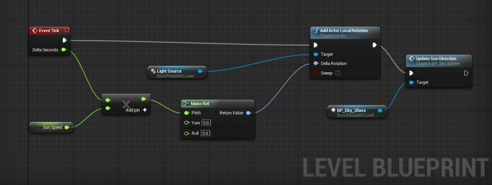
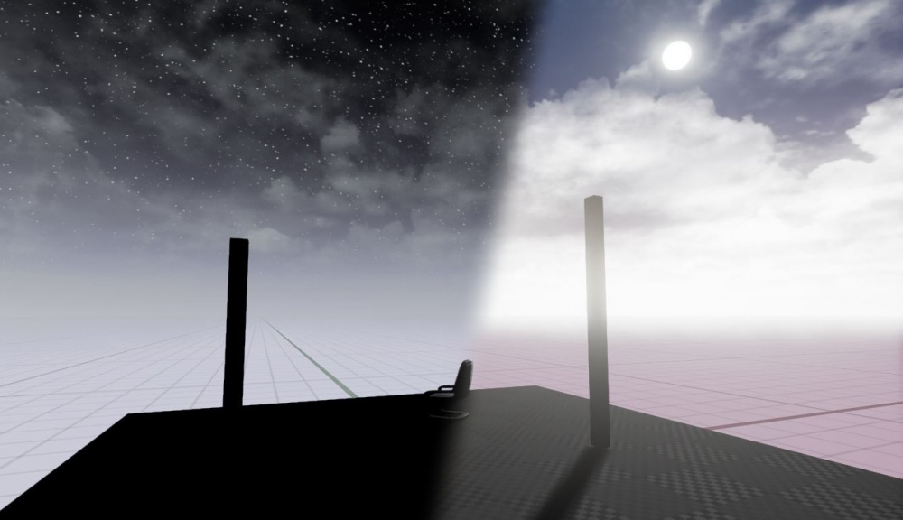
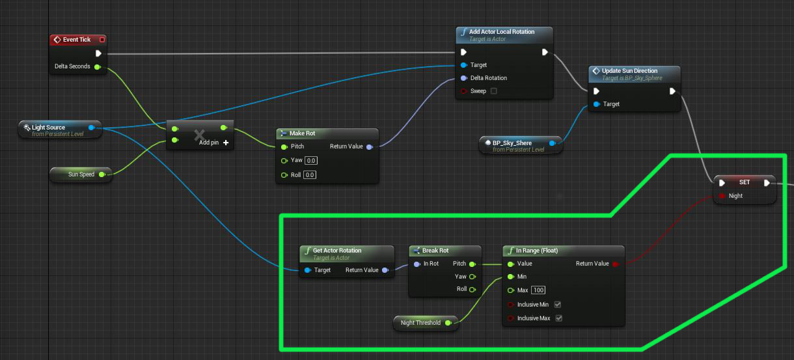

Tutorial: Time of Day
This tutorial will guide you through the steps of setting up a dynamic day-night cycle. It's not a complicated process, but you do need to make sure that you have set all the correct settings, some of which are not immediately apparent.
Created with Unreal Engine version 4.0.1
Prerequisites: Basic knowledge of the UE4 editor, basic blueprint skills.
Tesla Dev has created a video version of this tutorial here .
Roflmuffin has created a variation (timeline) of this tutorial here .
Contents
Level Setup
Create a new level from the "default" preset. (You can also use a self-made level, but make sure that it has the skydome blueprint and dominant directional light in place.)
Add some static meshes to the floor, just so you can see some shadows from the sun.

Sun Lamp Settings
Next we need to set up the sun lamp's properties. Select your Dominant Directional Light and go to the details panel.
Under the "Transform" pane, change the sun's "Mobility" property to " Movable ." This will allow us to move the light during runtime and have the shadows and lighting update accordingly.

Now uncheck " Cast Static Shadows ."
Level Blueprint
To actually get the time of day to progress, we need to use the Level Blueprint to rotate our Directional Light. You could use Matinee or a Timeline, but here I will just add some rotation to the sun every frame.

A quick explanation of the code:
- Every " Tick ," or frame, we are adding some rotation to the pitch of the directional light.
- The " SunSpeed " is a float that controls the rate at which the sun revolves around the world. We multiply it by DeltaTime so that the framerate won't affect this speed. Setting this to 30 gives a good preview daycycle speed.
- The " Update Sun Direction " node changes the sky based on the rotation of the sun. This is a function built-in to the skydome blueprint that needs to be called every Tick. (NOTE: You must have the skydome selected in the 3D viewport to add this node to the blueprint.) For more info on this function, check out the class blueprint for the skydome.
Final Steps
Before testing it out, make sure to rebuild the lighting .
After the rebuild, jump into play or simulate mode. You should see the sun moving through the sky, the lighting on your objects should update correctly, and the sky should go through the dawn/day/dusk/night phases.

Using Dynamic Global Illumination
A time of day system works best with dynamic GI. Although this feature is as of yet not fully implemented, you can find information on enabling it .
Troubleshooting the Sun
- Nothing happens when I press play; time is standing still!
Make sure that you set the sun to "Movable," and that "Cast Static Shadows" is disabled. Additionally, make sure that your "SunSpeed" float in the Level Blueprint is set to a high enough number. (I recommend 30 for debugging purposes.)
- The lighting angle changes, but the visible sun doesn't move and the sky doesn't change from day to night! Or: There are stars in the sky, even during the day!
This means you didn't set up the "Update Sun Direction" node properly in your blueprint. This function needs to be called every Tick. If you don't see the option to add this function, make sure you have your skydome selected in the level.
- The sun is moving way too fast!
The sun's speed is controlled by the "SunSpeed" variable in the blueprint you set up. Whatever value this is set to is how many degrees the sun will rotate in one second. For instance, if you have this set to 90, it will take 4 seconds to go through one day. Just reduce this value to slow it down.
- The sun's light is shining through the earth during the night!
Turning off the sun during the night will solve this. Read the next section to see how to change variables based on the time of day.
Changing the Environment
You may want to have a way for the level to know whether it is night or day. If you are using a Matinee sequence, it is pretty easy to do this; just put custom events into your Matinee to trigger the desired results. However, if you are using the method I demonstrated above, it can be more tricky.
Here is the blueprint, with logic for checking day vs. night:

A quick overview:
- First of all, we get the rotation of our lamp.
- Then we check if it is below the horizon.
- The "Night Threshold" float allows us to specify how many degrees below the horizon the sun must be before we switch to "night."
- We then set the "Night" boolean to reflect our findings. We can now use this variable to make logic decisions.
Now we need to use the "Night" variable. We set up some remote events to be called when the status changes from day to night:

- First of all: that "Set: Night" node at the beginning is the same as the right-most node from the last screenshot. Don't add it again.
- The "LastFrameNight" bool is use so that we know if it just became night, or if it has already been night. If we don't do this, our remote events will be called every frame.
- If it did indeed just change this last frame, we update our "LastFrameNight" accordingly.
- Then we check "Night" to see if it is dawn or dusk.
- Finally, we call the corresponding remote event.
You can do whatever you want with the remote events, such as play different sounds, turn the sun (or moon) on or off, etc.
Here is my custom event setup:

- First I write to the log, just to make sure it's working.
- Then I turn the sun on or off, depending on the need.
- 3.14 is the default sun brightness, that's why I used it.
- Remember to tweak the "Night Threshold" float from earlier to get the best results. If this value is too low, the sun will wink out before it goes down, which is not a good thing.
Conclusion
If you are going to have a complicated day/night scene, I would recommend using a Matinee sequence. You will have much more control over the whole process. However, for quick-and-easy day/night cycles, this setup will work fine.
(Original Author:
)